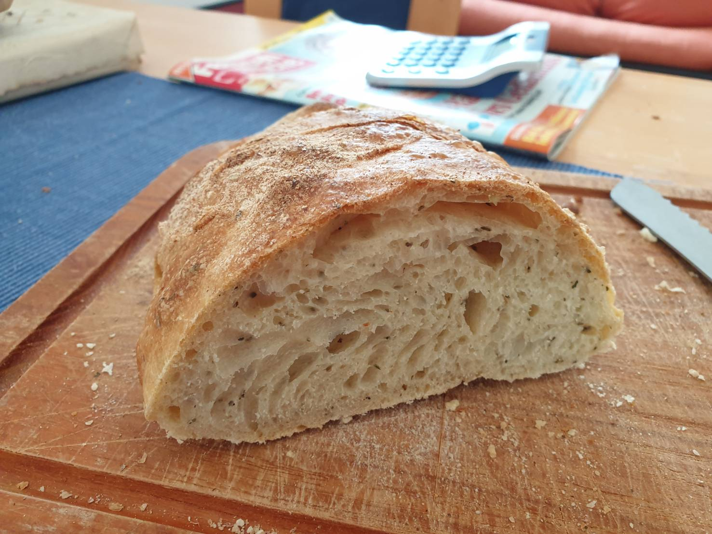

Mit 80% Hydration ein schwer zu handhabender Teig. Das Ergebnis ist ein sehr saftiges, luftiges Brot das eher zu herzhaftem als süßem Belag passt. Ergibt ein großes Ciabatta-Brot.

Zutaten (Menge ×1)
Gib die gewünschte Menge an:
Mehl Type 550
Lauwarmes Wasser
Zucker
Frische Hefe
Salz
Kräuter (zB. Oregano, Rosmarin, Basilikum)
Olivenöl
Utensilien
Teigschaber
Ofenfeste Schale
Ofeneinstellung
⏲ 220°C Ober-/Unterhitze, 25 Minuten
Hefe und Zucker im lauwarmen Wasser auflösen.
Salz, Kräuter und Mehl vermengen.
Olivenöl dazugeben.
Wassergemisch langsam im Mehl einrühren.
Teig mit dem Knethaken kneten, bis er leicht glänzt.